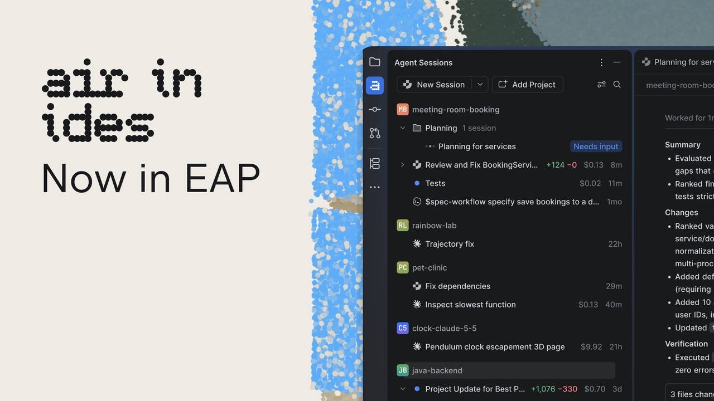
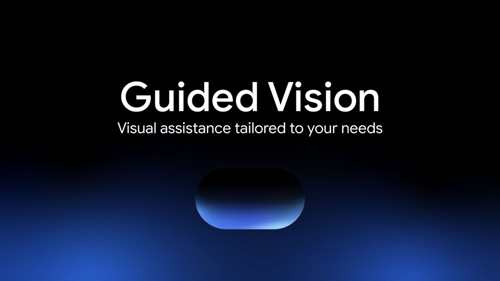
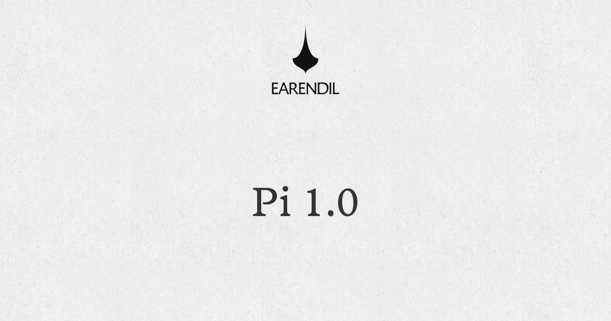

AI Intelligence Daily · 2026-10-02
专栏一｜新闻
1. GitHub Copilot Computer Use —— CLI + 桌面 app public preview
事实
Changelog 宣布 Computer use 在 Copilot CLI 与 Copilot app（macOS/Windows） 进入 public preview：可读无障碍应用与视觉上下文，点击/键入/滚动/拖拽、跨应用工作流；需用户批准；可 always-allow/重置；组织策略可禁用。强调对「无 API/CLI/MCP」遗留桌面软件尤其有价值。
判断
一线 Desktop Computer Use 正式 public preview → 强 A；对照 Runtime / Sandbox / 权限批准 UX。
2. Claude Code 2.1.286→2.1.287（Mods / You should know / MCP URL prompts）
事实
@anthropic-ai/claude-code latest=2.1.287；stable 仍 2.1.285。新增 Claude Mods；内置 mod You should know（侧 agent 盯漏）；agents 视图 n:<text>；MCP URL prompts（2025-11-25）；Remote Control / VSCode / 权限 / a11y 修复；Bedrock/Vertex 默认 1M context（可关）。
判断
实质能力面（Mods / 侧 agent / MCP elicitation）→ 强 A UPDATE；注意 stable 未翻。社区 @ClaudeDevs 高互动放大。
3. JetBrains Air in IDEs EAP（absorb 快讯 23:31）
事实
Air in IDEs EAP 开放：Marketplace 插件或 2026.3 EAP 原生；附 Junie Lite。插件是 agents/subscriptions 的 conduit，非 AI provider，默认不内置 agent；可检测 ACP-compatible agents；可接 Claude 订阅——不要求 JetBrains AI 订阅。
判断
一线 IDE 内嵌 agentic 正式邀测 → 强 A absorb；「有 Air 插件」≠「自带 Coding Agent」。

4. MiniMax Code CLI 0.6.0→0.6.1（合并 absorb）
事实
0.6.0（npm 12:01Z，已 flash 21:28）：/btw+/retry；默认模型→MiniMax-M3.1-Flash-Preview。0.6.1（npm 14:15Z，absorb）：侧会话 /doctor+/feedback。Desktop yml 仍 3.1.0；Web docs 仍钉 0.5.10。
判断
国内 Coding CLI 小版本 + 默认模型切换 → 强 A absorb；勿当 overnight Desktop 重推。
5. Manus Setup 2.0.2→2.0.3（Mac electron-updater）
事实
latest-mac.yml 钉 2.0.3（releaseDate 15:25:33Z）；dmg/zip 200（LM 15:49Z）。上轮 2.0.3 仍 403 → 本窗可触达。Caveat：落地页 CTA 仍链 2.0.2；无公开 release notes；Win exe 仍 403。
判断
Desktop 二进制升版 → 强 A UPDATE；能力 diff 未知，以 yml 通道为准。
6. Dynamic workflows in Copilot CLI / Copilot app / SDK
事实
以代码定义编排（串行/并行 + 多 agent），区别于 /fleet 子代理委派；所有 Copilot 计划可用；public preview。
判断
编排面产品化 → A；与 Computer Use 同日对照。
7. Guided Vision in Gemini Live
事实
Gemini Live Guided Vision 在兼容 Android 推出：摄像头共享 + 对话式实时视觉描述/引导；与盲人/低视力社区及 Aira 合作。
判断
消费端无障碍发船 → B；弱相关但够门槛。

专栏二｜话题热议
1. Pi 1.0 + Pi Durable 发船热议
事实
Earendil 发船 Pi 1.0 harness + 实验包 Pi Durable。GH v1.0.0@19:20Z。相对昨「You said no MCP」观点文 → 产品发船升格。X 官方高互动。
判断
harness 1.0 + 长程 Durable runtime 对照物；接续 MCP core 叙事。

2. Claude Mods 社区放大（与新闻条交叉）
事实
@ClaudeDevs「You can now mod Claude Code」likes 12135 / impressions ≈1.3M。产品事实以 2.1.287 CHANGELOG 为准。
判断
与 Pi 1.0 同日形成 harness 可扩展性对照。
3. Cloudflare Clef + BirthdayWeek Agent 基建
事实
开源决策模型 Clef / Clef-flash（Workers AI）；BirthdayWeek 放大 Artifacts open beta 与 Cloudflare OS waitlist。OS 博文首发 2026-08-05 → 本窗非 NEW 首发。
判断
决策路由 + Agent 可编程 repo——基建候选。

4. Figma MCP 白名单排除 Pi
Figma 收紧 MCP 为白名单客户端，社区称排除 Pi。记生态风险；勿当产品发船。
5. turbopuffer「RIP, vector database」
ANN 向量索引从主键降为二级；v3 混合检索叙事。对照 Memory/RAG 主键设计；非立刻换栈。
专栏三｜开源雷达
1. earendil-works/pi · v1.0.0 ★111201 —— highlight
Fullscreen TUI；codemode 瘦身；MCP OAuth hardening；实验包 pi-durable@1.0.0。相对昨 MCP 观点 → 1.0 产品钉。见图 3。
2. anthropics/claude-code · 2.1.287（stable 仍 2.1.285）
Mods / You should know / MCP URL prompts。见新闻条。生产钉 stable 则不动。
3. Cloudflare Clef（交叉话题）
Workers AI 托管；短名单评测 vs Jev。见图 4。
4. OpenShell tip pin · Pins 持平
OpenShell 仍 v0.1.2；tip→76cfd0e31d5e@21:47Z（≠release）。openrig v0.6.3★3711 · orca v1.4.218★83173 · Magnitude CLI 0.2.3 · hindsight/paperclip/livenerf 爬升勿重抬。
重点事件新进展
- Copilot Computer Use：CLI+app public preview 19:11Z → 强 A NEW。
- Claude Code：2.1.286→2.1.287（Mods）；stable 仍 2.1.285。
- JetBrains Air IDE EAP：flash 23:31 absorb；本窗无再 UPDATE。
- MiniMax CLI：0.6.0→0.6.1 合并 absorb；Desktop 仍 3.1.0。
- Manus Setup：2.0.2→2.0.3（Mac；CTA 滞后；无 notes）→ 强 A UPDATE。
- Pi：观点文 → v1.0.0 + Durable 发船。
- Argon / Flex / Embed5 / HydraFusion / OR tools / 蒸馏：本窗无实质产品 Δ。
- OpenShell：仍 v0.1.2；tip 前进 —— 不升格 release。
- 未变钉：Cursor Sep23 · MCP 2026-07-28 · 小艺 0.7.3 · DeepSeek rc.2 · Qoder Flash TBD · Copilot Default Enablement→Oct 22。
今天正在形成的趋势
- Desktop Computer Use 正式进一线产品（Copilot CLI+app）。
- IDE 内嵌 agentic 与 harness 可扩展同日对照（Air EAP + Mods + Pi 1.0）。
- 编排面代码化（Dynamic workflows vs /fleet）。
- 分发通道「双重真相」常态化（Manus yml vs CTA；MiniMax CLI vs docs）。
- MCP 生态政治升温（Pi 1.0 vs Figma 白名单）。
对智能体互联网
- Air ACP conduit + Copilot Computer Use 授权模型——宿主发现/挂载与桌面批准 UX。
- Claude Mods / MCP URL elicitation + Pi MCP OAuth hardening——扩展面与凭证提示协议化。
- Cloudflare Artifacts + Clef——Agent 互联网基建候选（OS waitlist 仅观察）。
对 Work / Agent 引擎
- Computer Use + Dynamic workflows——Desktop 操控与代码化编排。
- Claude Mods / You should know + Pi 1.0 / Durable——Plugin/Mod 与长程 Runtime。
- Manus 2.0.3 通道纪律 + MiniMax CLI 0.6.x 默认模型门控——发版真相源与模型 pin。
值得继续跟踪
- Copilot Computer Use 组织策略 · Dynamic workflows GA · Claude stable 翻牌
- Manus 2.0.3 Win/CTA/notes · Pi v1.0/Durable 实机 · Air EAP→稳定
- MiniMax Desktop >3.1.0 · docs 追上 · OpenShell >0.1.2
- Clef/Artifacts 实机 · Qoder Flash 结束日 · Copilot Default Enablement→Oct 22
- Argon Fairwind 扩面（无 Δ 不重抬）· Cursor Sep23 · MCP 2026-07-28
未来信号
「Desktop Computer Use / IDE 内嵌 agentic / harness 可扩展」三线并进——竞争从「模型谁更强」落到「谁能安全跨应用行动、在 IDE 挂载谁的 agent、harness 能否被 mod 与审计」。
价格 / 订阅雷达
Qoder Flash 10/1 续免（结束日 TBD）。MiniMax Flash-Preview promo 仍约 10/1–10/7。今日未见其他可核实的重要全站新促销/调价。
信源与方法
P0+P1 国内外官网/changelog/RSS/yml + 官方 X（余额耗尽后以网页为准）；HN/gh/Trending。配图仅原文真实图（JB Air / Guided Vision / Pi OG / Clef OG）。完整 MD：reports/2026-10-02.md · 扫描底稿 /workspace/daily-2026-10-02-*.md。